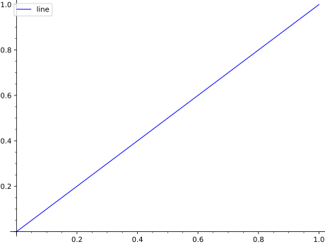

points - either a single point (as a tuple), a list of
points, a single complex number, or a list of complex numbers.
Type line2d.options for a dictionary of the default options for
lines. You can change this to change the defaults for all future
lines. Use line2d.reset() to reset to the default options.
INPUT:
alpha – How transparent the line is
thickness – How thick the line is
rgbcolor – The color as an RGB tuple
hue – The color given as a hue
legend_color – The color of the text in the legend
legend_label – the label for this item in the legend
Any MATPLOTLIB line option may also be passed in. E.g.,
linestyle - (default: “-”) The style of the line, which is one of
"-" or "solid"
"--" or "dashed"
"-." or "dashdot"
":" or "dotted"
"None" or "" or "" (nothing)
The linestyle can also be prefixed with a drawing style (e.g., "steps--")
"default" (connect the points with straight lines)
"steps" or "steps-pre" (step function; horizontal
line is to the left of point)
"steps-mid" (step function; points are in the middle of
horizontal lines)
"steps-post" (step function; horizontal line is to the
right of point)
marker - The style of the markers, which is one of
markeredgewidth – the size of the marker edge in points
EXAMPLES:
A line with no points or one point:
sage: line([])# returns an empty plotGraphics object consisting of 0 graphics primitivessage: importnumpy;line(numpy.array([]))# needs numpyGraphics object consisting of 0 graphics primitivessage: line([(1,1)])Graphics object consisting of 1 graphics primitive
A line with numpy arrays:
sage: line(numpy.array([[1,2],[3,4]]))# needs numpyGraphics object consisting of 1 graphics primitive
A line with a legend:
sage: line([(0,0),(1,1)],legend_label='line')Graphics object consisting of 1 graphics primitive

Lines with different colors in the legend text:
sage: p1=line([(0,0),(1,1)],legend_label='line')sage: p2=line([(1,1),(2,4)],legend_label='squared',legend_color='red')sage: p1+p2Graphics object consisting of 2 graphics primitives
Extra options will get passed on to show(), as long as they are valid:
sage: line([(0,1),(3,4)],figsize=[10,2])Graphics object consisting of 1 graphics primitivesage: line([(0,1),(3,4)]).show(figsize=[10,2])# These are equivalent
We can also use a logarithmic scale if the data will support it:
sage: line([(1,2),(2,4),(3,4),(4,8),(4.5,32)],scale='loglog',base=2)Graphics object consisting of 1 graphics primitive